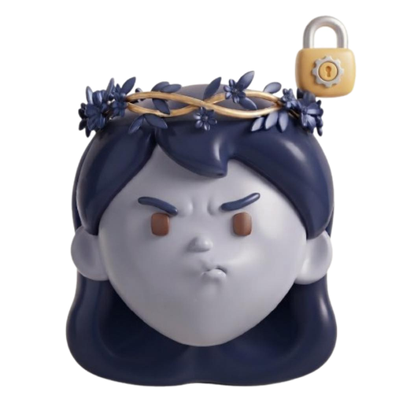

Destellos
5 h

No podrá ver tu perfil ni enviarte mensajes. Podrás desbloquearlo cuando quieras.
No verás su perfil ni sus mensajes hasta que lo desbloquees.
Ayuda
¿Te sirvió este artículo?
Gracias por tu respuesta.
¿Ha ocurrido algún problema?
Escríbenos por correo electrónico y te responderemos.
Se abrirá tu app de correo con el mensaje listo para enviar.
Salas de voz en vivo para practicar idiomas y conocer gente.
© 2026 Drex
Salas de voz en vivo para practicar idiomas y conocer gente.
Entra con tu correo o tu cuenta de Facebook
Lo usaremos para verificar tu identidad.

Escribe tu correo electrónico y te enviaremos un código de 6 dígitos para restablecer tu contraseña.
Enviamos un código de 6 dígitos a:
Mínimo 8 caracteres.
Ya puedes iniciar sesión con tu nueva contraseña.
Paso 1 de 5
Ingresa tu nombre para comenzar.
Al continuar, aceptas los Términos de servicio y la Política de privacidad de Drex.
Paso 2 de 5
Esta información no será pública. La usamos para mantener Drex seguro, sobre todo para las personas más jóvenes.
Paso 3 de 5
Ingresa tu correo y crea una contraseña segura.
Bloq Mayús está activado
Escribe el código de 6 dígitos que enviamos a:
¿No te llega el código? Revisa tu carpeta de spam o promociones.
Si el problema continúa, contáctanos.
Paso 4 de 5
Con esto te encontrarán en Drex. Puedes cambiarlo después.
Paso 5 de 5
Agrega una foto para que te reconozcan.
Tu cuenta ha sido creada con éxito.
Un par de pasos más para empezar.
Paso 1 de 5
Elige un idioma para comenzar tu camino de aprendizaje.
Elige un idioma para continuar.
Paso 2 de 5
Escribe tu país para personalizar tu perfil y conectar con tu comunidad.
Selecciona tu país para continuar.
Paso 3 de 5
Elige algunos temas para personalizar tu experiencia.
Paso 4 de 5
Añade una pequeña bio para que otros te conozcan. (Opcional)
Paso 5 de 5
Tu perfil está configurado.
Bienvenido a la comunidad Drex.
¡Drex ya está en Google Play!
Descarga la versión oficial y recibe actualizaciones automáticas.
Participantes
Agregar personas
Mensaje anclado
...
Antesala

Nombre
mensaje...
Editar mensaje
Cargando...
Mensajes temporales
Desactivado
Los mensajes nuevos desaparecerán después de:
Multimedia
Vista previa · se aplica solo a este chat
Clásicos
Naturaleza
Vibrantes
Celebraciones
Grupo
Participantes
Ajustes del grupo
Solo admins escriben
Restringe quién envía mensajes
Enlace de invitación
Comparte el grupo con un enlace
Escribe para buscar mensajes en este grupo
Nombre del grupo
Usuario
Escribe para buscar usuarios
Nombre
Cargando...
Se guardan solo en este dispositivo
No tienes borradores
Lo que escribas en un post se guarda aquí automáticamente.
Elige fecha y hora. Se usará la hora de tu dispositivo.
Mínimo 5 minutos · máximo 30 días en el futuro.
Solo tú puedes ver esto
Escribe ejercicios en el idioma que aprendes y recibe correcciones reales. También puedes ayudar a otros con tu idioma.
Solo visible para ti
Fiestas de voz
Habla en grupo, practica idiomas y juega con tu gente.
Crear fiesta de voz
Se publicará en el feed principal
Transmisiones en vivo
Mira a tu gente en directo o inicia la tuya.
Aún no hay transmisiones en vivo.
Sé la primera persona en transmitir.
ID ·
Elige un juego para la sala
Tu cuenta fue desactivada por el equipo de moderación de Drex.
Motivo:
Si crees que fue un error, puedes apelar la decisión y la revisaremos.
@usuario
Perfil de Drex
Si bloqueas esta cuenta desde el comentario, dejarás de ver su contenido, sus publicaciones y todo lo relacionado con ella.
Esta cuenta ha sido bloqueada exitosamente. No se te mostrará más el contenido relacionado de ella.
Esta cuenta es auténtica y está verificada por Drex.
La insignia de verificación se otorga a cuentas oficiales o a cuentas cuya identidad fue verificada con documentos. Drex puede retirar la verificación en cualquier momento si la cuenta incumple las normas de la plataforma.
Descubre publicaciones por tema.
Lo más votado por la comunidad ahora mismo.
Asistente de Drex
Ubicación no especificada
Publica y administra tus posts desde aquí
Publicaciones a las que hiciste eco en Drex
Tus notas y pensamientos publicados en la comunidad
Tu música publicada en Drex
Efectos que creaste en Drex
@…
Cuenta
Seguridad y privacidad
Notificaciones
Preferencias
Almacenamiento
Bienestar
Ayuda
Comunidad
Legal y empresa
Sesión
Drex
Protege tu acceso y tu información
ESTADO DE SEGURIDAD
Revisando tu cuenta
Completaremos esta revisión con tus ajustes actuales.
Seguridad de la cuenta
Refuerza tu acceso con capas extra de protección y mantente al tanto de lo importante.
Alertas de inicio de sesión
Avísame si se detecta un dispositivo nuevo.
Avisar sobre cambios importantes
Incluye cambios de acceso y privacidad.
Actividad reciente
Tus sesiones y dispositivos
Revisa dónde está abierta tu cuenta y gestiona tus dispositivos.
Dónde iniciaste sesión
Revisa los dispositivos donde tu cuenta está abierta. Si ves algo que no reconoces, cierra esa sesión.
Dispositivos reconocidos
Si olvidas un dispositivo, el próximo inicio de sesión desde ahí generará una alerta.
Historial de accesos
Tu información
Obtén una copia de tu información de Drex y controla tus datos.
Descargar mis datos
Preparamos tu archivo con tu información de Drex. Cuando esté listo, te avisaremos para que lo descargues.
Funciones relacionadas
Cuenta
Desactiva tu cuenta de forma temporal o elimínala para siempre.
Vimos un inicio de sesión desde un dispositivo que no reconocemos. Si fuiste tú, no necesitas hacer nada más.
Tus decisiones se guardan en este dispositivo
Control del chat
Reduce los datos que se conservan y compartes.
Guardar borradores
Conserva el texto pendiente solo aquí.
Confirmaciones de lectura
Permite que se muestre cuándo lees mensajes.
Datos locales del chat
Elimina borradores y silencios almacenados en este dispositivo. No borra los mensajes de la conversación.
0min
Hoy
Sin límiteActividad semanal
0
Total
0
Promedio/día
-
Día pico
Límite diario
Límite de tiempo
Recibe un aviso al alcanzarlo
Recordatorio de descanso
Aviso cada 20 min sin parar
Modo silencio nocturno
Sin notificaciones de 22:00 a 8:00
Elige qué tipo de alertas quieres recibir. Puedes activar o desactivar cada categoría de forma independiente.
En tu teléfono
Revisando…
Recibe avisos aunque Drex esté cerrada. En iPhone necesitas tener Drex instalada en tu pantalla de inicio.
Interacciones
Votos
Cuando alguien vota tu publicación
Comentarios
Cuando alguien comenta en tu post
Menciones
Cuando alguien te menciona con @
Colaboraciones
Invitaciones y cambios en colaboraciones
Seguidores
Nuevos seguidores
Cuando alguien empieza a seguirte
Publicaciones de seguidos
Cuando alguien que sigues publica
Mensajes
Mensajes directos
Cuando recibes un nuevo mensaje
Mensajes de grupo
Notificaciones de tus grupos de chat
En vivo
En vivo de seguidos
Cuando alguien que sigues transmite en vivo
Aprendizaje
Correcciones de ejercicios
Cuando alguien corrige tu ejercicio de idioma
Guardado ✓
Nota: aquí puedes elegir cómo quieres ver la plataforma. Si activas el modo oscuro, Drex ajustará fondos, tarjetas y textos para que todo se vea más cómodo y legible.
Almacenamiento temporal
Datos temporales guardados en este dispositivo. Liberarlos puede acelerar la app.
0 KB
Uso estimado de caché
Desglose por categoría
Se conservarán tus datos de cuenta y sesión. Solo se limpia información temporal (historiales y caché local).
Administra aquí los datos privados de tu cuenta. Estos campos no se muestran públicamente.
Cuenta privada
Solo tus seguidores aprobados verán tu contenido
Desde aquí puedes revisar y gestionar la lista de personas bloqueadas.
No tienes solicitudes pendientes
Agrega tu número de teléfono para mejorar la seguridad de tu cuenta.
Controla quién puede enviarte mensajes directos. Elige entre todos, solo amigos o nadie.
Esta opción es ideal si planeas volver pronto. Al desactivarla:
Esta acción es definitiva tras el periodo de gracia de 30 días.
Tu nombre de usuario
@usuario
Al desactivar tu cuenta de Drex:
¿Prefieres que nuestro equipo lo haga por ti?
Pide a nuestro equipo que elimine tu cuentaTu nombre de usuario
@usuario
Si eliminas tu cuenta, no podrás volver atrás. Todo se eliminará de los servidores:
Publica, conversa, escucha música, haz en vivos y practica idiomas. Todo en un mismo lugar, sin salir de la app.
Cada sección de Drex existe porque alguien la pidió: el modo descanso, las fiestas, el hub del creador. Nada aquí es relleno.
Drex · 2026Drex no parece una copia de otra red porque no lo es. Cada pantalla se diseñó desde cero para que se sienta propia, no prestada.
Tu perfil, tu contenido, tu privacidad. Sin algoritmos que te escondan cosas: lo que publicas llega a tu gente.
Red social, chat, música, en vivos y práctica de idiomas conviviendo en la misma app. Menos apps, más vida.
Comparte fotos, videos y pensamientos. Vota, comenta y haz eco de lo que te mueva.
Conversaciones en tiempo real, reacciones y traducción integrada para hablar con cualquiera.
Sube tus canciones, arma playlists y sigue a tus artistas favoritos sin salir de la app.
Transmisiones de video y salas de voz para juntarte con tu gente.
Ejercicios de inglés y más idiomas, hechos para el día a día.
Temporizador de sueño con sonido en bucle y respiración guiada.
La infraestructura que impulsa cada interacción en tiempo real.

"Drex nació porque las redes se sentían frías. Aquí cada detalle está hecho para que crear y conectar se sienta humano."
Herramienta de escritorio para creadores
Drex Studio es la herramienta de escritorio para crear, probar y publicar efectos para la cámara de Drex: filtros, lentes y juegos interactivos.
Nuevo proyecto
Empieza desde plantillas listas para filtros, lentes AR y juegos.
Preview 3D
Previsualiza tu efecto en tiempo real antes de publicarlo.
Detección facial
Seguimiento de rostro y manos para efectos interactivos.
Plantillas de juego
Lógica de juego lista para crear minijuegos en la cámara.
Editor de código
Ajusta cada detalle con un editor de código integrado.
Envía tu efecto
Publica tu efecto y compártelo con toda la comunidad Drex.
Requiere Windows 10 o superior.
Revisa los efectos enviados por la comunidad antes de publicarlos.
Transmitir desde el estudio
Tus efectos, tu en vivo
Sin efectos todavía
Crea efectos en Drex Studio y aparecerán aquí.
Selecciona un efecto (opcional)
Se abrirá la vista previa del en vivo para confirmar antes de salir al aire.
Teclas 1-9 cambian de escena
Crean una escena nueva lista para usar
Selecciona una capa para editarla
Supr elimina la capa seleccionada
Escribe una pregunta y al menos 2 opciones
Los espectadores votan escribiendo 1, 2, 3 o 4 en el chat
Sin pregunta destacada
Sin datos todavía
Sin datos todavía
Sin datos todavía
Los mensajes con estas palabras se ocultan y el usuario se silencia 10 min.
La moderación es local a este estudio y no afecta al en vivo.
Sin datos todavía
Sin alertas todavía
Para usar con software externo
Última actualización: 17 de septiembre de 2026
En Drex queremos que comprendas qué información recopilamos y cómo la usamos y compartimos. Por eso te recomendamos leer nuestra Política de Privacidad. Esto te ayudará a usar los productos de Drex de la manera que prefieras.
En esta política explicamos cómo recopilamos, usamos, compartimos, conservamos y transferimos tu información. También te informamos sobre tus derechos. Cada sección incluye ejemplos para que nuestras prácticas sean más fáciles de entender.
Esta Política de Privacidad describe cómo Drex ("nosotros", "nuestro") recopila, usa y comparte tu información cuando utilizas nuestros productos y servicios (en conjunto, los "Productos de Drex"). Esto incluye la aplicación móvil de Drex, el sitio web y cualquier función, aplicación, tecnología o software que ofrezcamos.
Esta política se aplica a todas las personas que usan los Productos de Drex, tengan o no una cuenta registrada. Si no estás de acuerdo con algún punto de esta política, debes dejar de usar nuestros productos.
Es importante que sepas cómo controlar tu privacidad. Por eso también te mostramos dónde puedes gestionar tu información en los ajustes de la aplicación. Puedes actualizar estos ajustes para dar forma a tu experiencia.
Esta política cubre todos los Productos de Drex, incluyendo:
Cuando mencionamos "Drex", "nosotros" o "nuestro" en esta política, nos referimos a la entidad que opera estos productos y que actúa como responsable del tratamiento de tus datos.
La información que recopilamos y tratamos sobre ti depende de cómo uses nuestros Productos. Por ejemplo, recopilamos información diferente si publicas una foto que si solo lees mensajes. Cuando usas nuestros Productos, recopilamos cierta información sobre ti incluso si no tienes una cuenta.
Esta es la información que recopilamos:
Recopilamos el contenido, las comunicaciones y demás información que proporcionas cuando usas nuestros Productos, por ejemplo, cuando te registras para obtener una cuenta, creas o compartes contenido, o envías mensajes o te comunicas con otras personas. Esto puede incluir información presente en el contenido que creas o sobre dicho contenido, como el lugar donde se tomó una foto o la fecha en que se creó un archivo. También incluye lo que ves a través de las funciones de cámara que ofrecemos, para que podamos hacer cosas como sugerirte filtros o darte consejos sobre los formatos de cámara que podrían interesarte.
Recopilamos información sobre las personas, cuentas, comunidades y grupos con los que estás conectado y sobre cómo interactúas con ellos en nuestros Productos, como las personas con las que más te comunicas o los grupos a los que perteneces. También recopilamos la información de contacto que nos proporcionas si decides sincronizar, subir o importar los contactos de tu dispositivo, la cual usamos para ayudarte a encontrar personas que quizá conozcas.
Recopilamos automáticamente información sobre el dispositivo y el software que utilizas para acceder a nuestros Productos, así como sobre tu actividad en ellos:
Recibimos información sobre ti de nuestros socios y proveedores de servicios. Por ejemplo, los proveedores de análisis nos ayudan a entender cómo se usan nuestros Productos, y los proveedores de pago nos confirman las transacciones. También podemos recibir información de terceros sobre tu actividad fuera de Drex cuando esos terceros usan nuestras herramientas de integración.
Recopilamos información sobre tu ubicación cuando usas nuestros Productos, dependiendo de los permisos que nos otorgues y de tus ajustes:
Puedes controlar el acceso a tu ubicación desde los ajustes de tu dispositivo en cualquier momento.
Cuando participas en fiestas de voz o videollamadas, procesamos los datos técnicos necesarios para establecer y mantener la conexión (como datos de señalización y calidad de red). No grabamos el audio de tus llamadas sin tu conocimiento. En los mensajes, tratamos el contenido necesario para entregarlos, mostrar vistas previas y aplicar nuestros sistemas de seguridad.
Cierta información es necesaria para que nuestros Productos funcionen. Otra información es opcional, pero sin ella es posible que la calidad de tu experiencia se vea afectada. Por ejemplo:
Usamos la información que tenemos (sujeta a las elecciones que realices) como se describe a continuación:
Cuando usamos sistemas automatizados (incluyendo inteligencia artificial) para tomar decisiones que te afectan, como la moderación de contenido o las recomendaciones del feed, aplicamos controles para garantizar que estos sistemas funcionen de manera justa y puedas solicitar revisión humana cuando corresponda.
Compartimos tu información con otros de las siguientes maneras:
Nunca vendemos tu información personal a terceros con fines publicitarios sin tu consentimiento explícito.
Tratamos tu información personal basándonos en uno o varios de los siguientes fundamentos jurídicos, según la normativa aplicable:
La seguridad de tu información es importante para nosotros. Aplicamos medidas técnicas y organizativas para proteger tus datos, incluyendo:
A pesar de nuestros esfuerzos, ningún sistema es completamente seguro. Te recomendamos usar una contraseña segura y única, activar las funciones de seguridad disponibles (como la verificación en dos pasos) y no compartir tus credenciales con nadie.
Qué puedes hacer tú: revisa periódicamente tu actividad de inicio de sesión, cierra sesión en dispositivos compartidos, ten cuidado con los mensajes sospechosos que pidan tus datos (phishing) y mantén actualizada la aplicación para recibir los últimos parches de seguridad.
Notificación de incidentes: en caso de una vulneración de seguridad que afecte tus datos personales, te notificaremos y avisaremos a las autoridades competentes conforme a lo exigido por la ley aplicable.
Conservamos tu información durante el tiempo necesario para prestarte nuestros servicios, cumplir con nuestras obligaciones legales y resolver disputas. Los criterios que usamos incluyen:
Cuando eliminas tu cuenta, eliminamos o anonimizamos tu información personal en un plazo razonable, salvo que debamos conservarla por motivos legales o de seguridad. Parte de la información puede permanecer en copias de seguridad durante un tiempo limitado.
Dependiendo de tu lugar de residencia, puedes tener los siguientes derechos sobre tu información personal:
Puedes ejercer muchos de estos derechos directamente desde los ajustes de la aplicación (por ejemplo, descargar tus datos o eliminar tu cuenta). Para otras solicitudes, contáctanos en zam.contact@yahoo.com indicando tu nombre de usuario y el derecho que deseas ejercer.
Cómo procesamos tu solicitud: verificaremos tu identidad antes de responder, para proteger tu información. Responderemos en los plazos exigidos por la ley aplicable (generalmente dentro de un mes, prorrogable en casos complejos). Si no podemos atender tu solicitud, te explicaremos los motivos.
Representantes autorizados: puedes designar a otra persona para que ejerza tus derechos en tu nombre, siempre que nos proporcione prueba de su autorización.
No te discriminaremos por ejercer tus derechos de privacidad. Esto significa que no te negaremos servicios, no te cobraremos precios diferentes ni te daremos un nivel distinto de calidad por haber ejercido tus derechos.
Drex no está dirigido a menores de 13 años. No recopilamos intencionalmente información personal de menores de 13 años. Si tienes entre 13 y 17 años, debes contar con el consentimiento de tu padre, madre o tutor para usar nuestros Productos, según lo exija la ley de tu país.
Si descubrimos que hemos recopilado información personal de un menor de 13 años sin el consentimiento parental verificable, tomaremos medidas para eliminar esa información lo antes posible. Si crees que un menor nos ha proporcionado información personal, contáctanos de inmediato.
Operamos a nivel global, por lo que tu información puede transferirse y tratarse en países distintos al tuyo, incluyendo países cuyas leyes de protección de datos pueden diferir. Cuando realizamos estas transferencias, aplicamos las salvaguardas adecuadas exigidas por la ley, como cláusulas contractuales tipo, para proteger tu información.
Usamos cookies y tecnologías similares (como almacenamiento local, identificadores de dispositivo y píxeles) para:
Puedes controlar las cookies desde la configuración de tu navegador o dispositivo. Ten en cuenta que desactivarlas puede afectar el funcionamiento de algunas funciones.
Señal "No rastrear" (DNT): la mayoría de los navegadores incluyen una función de "No rastrear" para indicar tu preferencia de privacidad. Actualmente no existe un estándar uniforme para reconocer estas señales, por lo que no respondemos automáticamente a ellas. Si se adopta un estándar que debamos seguir, lo informaremos en una versión actualizada de esta política.
Podemos actualizar esta Política de Privacidad periódicamente. La versión actualizada se identificará mediante la fecha de "Última actualización" y entrará en vigor tan pronto como sea accesible. Si realizamos cambios sustanciales, te lo notificaremos de forma destacada en la aplicación o por correo electrónico. Te recomendamos revisar esta política con frecuencia para estar informado sobre cómo protegemos tu información.
Residentes de California (CCPA/CPRA): tienes derecho a saber qué información personal recopilamos, a eliminarla, a corregirla, a optar por no participar en la venta o el uso compartido de tu información personal y a no recibir trato discriminatorio. En los últimos 12 meses hemos recopilado las categorías descritas en la sección 3. No vendemos tu información personal a cambio de dinero.
Residentes del Espacio Económico Europeo, Reino Unido y Suiza (RGPD): tienes los derechos descritos en la sección 9, incluyendo el derecho a presentar una reclamación ante tu autoridad de control local. Nuestro representante para asuntos de protección de datos puede ser contactado en zam.contact@yahoo.com.
Residentes de Brasil (LGPD): tienes derechos de confirmación, acceso, corrección, anonimización, portabilidad y eliminación, entre otros, los cuales puedes ejercer contactándonos.
Otros países: si tu país cuenta con leyes de privacidad específicas, aplicaremos los derechos y protecciones que correspondan según dicha normativa.
Para facilitar la lectura de esta política:
Si tienes preguntas o inquietudes sobre esta Política de Privacidad o nuestras prácticas de datos, contáctanos en:
Drex
Correo electrónico: zam.contact@yahoo.com
Si resides en una jurisdicción con autoridad de protección de datos, también tienes derecho a presentar una reclamación ante dicha autoridad.
Última actualización: 17 de septiembre de 2026
Bienvenido a Drex. Estos Términos de Servicio ("Términos") constituyen un acuerdo legal entre tú y Drex ("nosotros", "nuestro") que rige tu acceso y uso de nuestros productos y servicios, incluyendo la aplicación móvil, el sitio web y todas las funciones asociadas (en conjunto, los "Servicios").
Al crear una cuenta o al usar nuestros Servicios, aceptas estos Términos y nuestra Política de Privacidad. Si no estás de acuerdo, no debes usar nuestros Servicios.
Drex es una plataforma social que te permite crear un perfil, publicar contenido (textos, fotos, videos), interactuar con otras personas mediante comentarios, reacciones y mensajes, participar en comunidades, unirte a fiestas de voz y descubrir contenido de tu interés.
Nos esforzamos por mantener nuestros Servicios seguros y en funcionamiento, pero no garantizamos que estén libres de interrupciones o errores. Podemos modificar, suspender o discontinuar cualquier función en cualquier momento, avisándote cuando sea razonablemente posible.
Para usar nuestros Servicios debes tener al menos 13 años (o la edad mínima exigida en tu país). Si eres menor de edad según las leyes de tu jurisdicción, necesitas el consentimiento de tu padre, madre o tutor.
Para usar la mayoría de las funciones necesitas crear una cuenta. Al registrarte aceptas:
Eres responsable de toda la actividad que ocurra en tu cuenta. Podemos suspender o eliminar cuentas que violen estos Términos o que permanezcan inactivas durante periodos prolongados.
Tú conservas los derechos sobre el contenido que publicas en Drex ("Tu Contenido"). Sin embargo, al publicarlo nos otorgas una licencia mundial, no exclusiva, gratuita y transferible para alojar, almacenar, reproducir, distribuir, mostrar y crear obras derivadas de Tu Contenido con el fin de operar, promocionar y mejorar nuestros Servicios. Esta licencia termina cuando eliminas Tu Contenido, salvo en los casos descritos en nuestra Política de Privacidad (por ejemplo, copias de seguridad o contenido compartido por otros).
Declaras que tienes los derechos necesarios sobre Tu Contenido y que este no infringe derechos de terceros ni la ley aplicable.
Te comprometes a no:
Queremos que Drex sea un lugar seguro y acogedor. Además de lo anterior, están prohibidos:
Podemos retirar contenido, limitar la visibilidad de cuentas o suspender cuentas que violen estas normas, con o sin aviso previo según la gravedad.
Todos los derechos sobre nuestros Servicios, incluyendo el diseño, el logotipo, el nombre "Drex", el código, los textos y los elementos gráficos, nos pertenecen o están licenciados a nuestro favor. No puedes copiarlos, modificarlos, distribuirlos ni crear obras derivadas sin nuestra autorización escrita.
Si crees que algún contenido en Drex infringe tus derechos de autor, puedes enviarnos una notificación a zam.contact@yahoo.com con la información necesaria para identificar la obra y el material infractor. Actuaremos conforme a la ley aplicable.
Algunos Servicios pueden incluir funciones de pago (por ejemplo, suscripciones, regalos virtuales o promociones). Al realizar una compra aceptas:
Podemos cambiar los precios o las funciones de pago avisándote con antelación razonable.
El tratamiento de tu información personal se rige por nuestra Política de Privacidad, que forma parte integrante de estos Términos. Te recomendamos leerla detenidamente.
Puedes eliminar tu cuenta en cualquier momento desde los ajustes de la aplicación. Nosotros podemos suspender o terminar tu acceso a los Servicios si violas estos Términos, si lo exige la ley o si discontinuamos los Servicios.
Tras la terminación, dejarás de tener derecho a usar los Servicios. Las secciones de estos Términos que por su naturaleza deban sobrevivir (propiedad intelectual, limitación de responsabilidad, ley aplicable) seguirán vigentes.
Nuestros Servicios se proporcionan "tal cual" y "según disponibilidad", sin garantías de ningún tipo, expresas o implícitas, incluyendo garantías de comerciabilidad, idoneidad para un fin particular o no infracción. No garantizamos que los Servicios sean ininterrumpidos, seguros o libres de errores, ni que el contenido de otros usuarios sea exacto o confiable.
En la máxima medida permitida por la ley, Drex no será responsable por daños indirectos, incidentales, especiales, consecuentes o punitivos, ni por pérdida de beneficios, datos o fondo de comercio, derivados del uso o la imposibilidad de usar nuestros Servicios.
Nuestra responsabilidad total por cualquier reclamación relacionada con estos Términos o los Servicios no excederá la cantidad que hayas pagado por los Servicios en los doce (12) meses anteriores a la reclamación, o cien dólares estadounidenses (USD 100), lo que sea mayor.
Nada en estos Términos limita los derechos que te corresponden como consumidor según la ley aplicable y que no puedan renunciarse por contrato.
Aceptas indemnizar y eximir de responsabilidad a Drex, sus directivos, empleados y socios frente a reclamaciones, daños, pérdidas y gastos (incluyendo honorarios razonables de abogados) derivados de tu uso de los Servicios, Tu Contenido o tu violación de estos Términos.
Estos Términos se rigen por las leyes aplicables según tu lugar de residencia, sin dar efecto a principios de conflicto de leyes. Intentaremos resolver cualquier disputa de forma amistosa; si no es posible, las partes se someten a los tribunales competentes de la jurisdicción correspondiente, salvo que la ley de protección al consumidor disponga otra cosa.
Nuestros Servicios pueden contener enlaces a sitios web o servicios de terceros, así como contenido publicado por otros usuarios. No controlamos ni somos responsables del contenido, las políticas de privacidad o las prácticas de esos terceros. Te recomendamos revisar sus términos antes de usarlos.
La presencia de un enlace no implica que respaldemos el sitio o servicio enlazado.
Podemos actualizar estos Términos periódicamente. Te avisaremos de los cambios sustanciales mediante un aviso en la aplicación o por correo electrónico antes de que entren en vigor. Si continúas usando los Servicios después de la entrada en vigor de los cambios, se entenderá que los aceptas.
Si tienes preguntas sobre estos Términos, contáctanos en:
Drex
Correo electrónico: zam.contact@yahoo.com
Descansa con tu sonido en bucle.
Listo para descansar
Temporizador
Sonido
Respiración
Inhala 4 s · sostén 4 s · exhala 4 s
El sonido se repite hasta que el temporizador termina. Al salir, todo se detiene.
Solicita eliminar permanentemente tu cuenta de Drex y tus datos
Para proteger tus datos, necesitamos una solicitud formal para procesar eliminaciones de cuenta. Sigue estos pasos:
Cuando se procese tu solicitud, la siguiente información se eliminará permanentemente de nuestros servidores activos:
Nota: algunos datos de transacciones pueden conservarse por un periodo limitado según lo exijan regulaciones financieras u obligaciones legales.
Una vez eliminados, tus datos no se pueden recuperar. Mantenemos una copia de seguridad de 30 días como periodo de gracia por seguridad antes del borrado final de nuestros sistemas. Después de este periodo, todos los identificadores personales se eliminan o se anonimizan por completo.
Si sos el papá, la mamá o un adulto responsable, pedile a la persona menor de edad el código de 6 dígitos que le aparece en su propia sección de Control parental, e ingresalo acá para supervisar su cuenta.
Salas de voz en vivo para practicar idiomas y conocer gente.
© 2026 Drex
Abre tu app de autenticación (Google Authenticator, Authy, etc.) e ingresa el código de 6 dígitos, o usa uno de tus códigos de respaldo.
La información que introduzcas aquí será visible para otros usuarios.
Tu nombre real. Será visible en tu perfil.
Solo se puede cambiar cada 7 días.
0/150
Añade hasta 3 enlaces que aparecerán en tu perfil. El título es opcional; si lo dejas vacío se muestra el dominio. Déjalos vacíos para quitarlos.
Enlace 1
Enlace 2
Enlace 3
PAÍS SELECCIONADO
Escribe o toca un país para seleccionarlo.
La ciudad es opcional. Tu perfil mostrará la ciudad junto con el país.
Vista previa
Ubicación no especificada
Este es el correo vinculado a tu cuenta. No puede ser modificado por razones de seguridad.
Por seguridad, puede que el sistema te solicite volver a iniciar sesión antes de permitir el cambio.
Selecciona tu día, mes y año de nacimiento.
Puedes usarla para completar la información de tu cuenta y tu perfil.
Cambia los menús y controles de Drex.
El idioma de la aplicación es independiente de la traducción automática de publicaciones y comentarios.
Puedes cambiarlo cuando quieras.
Elige el idioma que quieres practicar en Drex. Tu selección se guardará en tu perfil.
Idioma de publicaciones
Las publicaciones en otros idiomas se traducirán automáticamente
Selecciona tu idioma preferido. Los posts, comentarios y respuestas escritos en otros idiomas serán detectados y traducidos automáticamente usando Google Translate.
Traducción automática
Traducir publicaciones en otros idiomas
Seleccionar idioma
Traducción automática del chat
Los mensajes del chat escritos en otros idiomas se traducirán solos al llegar, sin que tengas que tocar nada.
Traducir mensajes del chat
Automático al recibir cada mensaje
Idioma de traducción del chat
Automático (igual que publicaciones)
Toca la foto para elegir una nueva
Toca la imagen para elegir una portada nueva
Puedes subir hasta 2 canciones por día.
Este nombre quedará guardado en tu cuenta para siempre y aparecerá en todas tus canciones.
1. Declaro que la música que subo es de mi autoría original o que cuento con los derechos y autorizaciones necesarias para publicarla.
2. No subiré música protegida por derechos de autor de terceros sin su permiso.
3. Drex podrá eliminar cualquier canción que infrinja derechos de autor y suspender mi acceso a la función de música en caso de reincidencia.
4. Al publicar, mi canción podrá aparecer en el feed, en las búsquedas y en mi perfil.
¿No ves tus MP3? Al elegir el archivo toca «Explorar» en lugar de «Fototeca».
Portada (opcional)
Anuncio
La fila · Mix Drex
Drex Música es gratis gracias a los anuncios
La música se pausará sola cuando termine el tiempo.
Mezcla el final de una canción con el inicio de la siguiente, sin cortes.
0 canciones
La fila
Escanea para ver este perfil
No pudimos acceder a la cámara
Revisa el permiso de cámara en tu dispositivo e inténtalo de nuevo.
Vista previa
Programar en vivo
Programa tu en vivo con anticipación
Conectando...
Billetera
Regalos